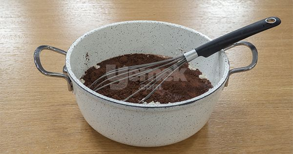
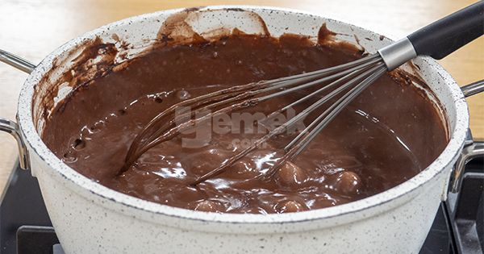
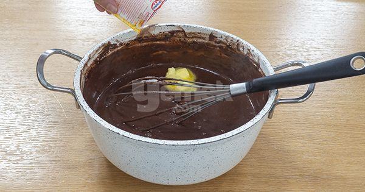
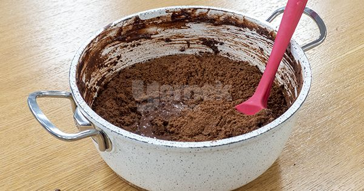
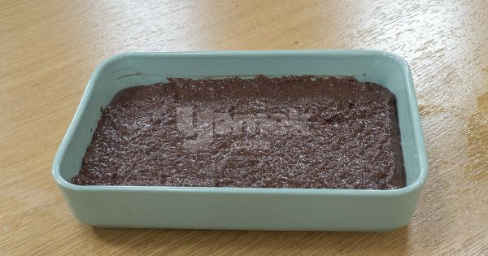
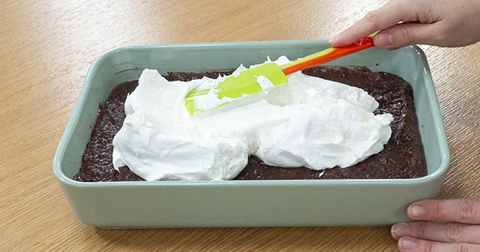
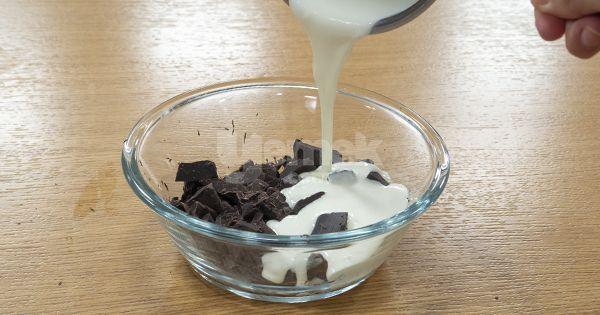
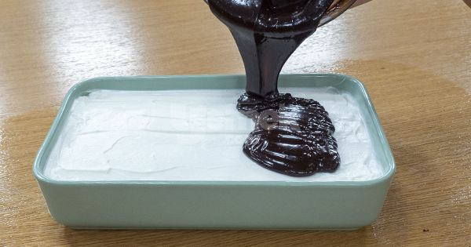
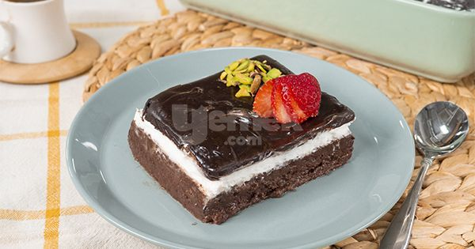

Alaska Tatlısı
Alaska tatlısı en alt katındaki yumuşacık muhallebisi ve içinde eriyen
kakaolu bisküvisi, üzerine eklenen yumuşacık krem şantiyle çok daha hafif bir lezzete dönüşüyor.
Kadife gibi kıvamıyla, gerçek çikolatadan hazırlanan sosu ise bu lezzet deneyimini farklı bir noktaya taşıyor!
Tarif:Ayşegül Uslu
Alaska Tatlısı İçin Malzemeler
Kakaolu Katı İçin:
- 1 Litre Süt
- 1 Su Bardağı Toz Şeker
- 3 Yemek Kaşığı Kako
- 2 Yemek Kaşığı Nişasta
- 1 Paket Vanilin
- 1 Yemek Kaşığı Tereyağı
- 2 Paket Kakolu Bisküvi (150 gr)
- 2 Yemek Kaşığı Un
Krem Şanti Katı İçin:
- 2 Paket Krem Şanti
- 2 Bardak Süt
Çikolatalı Katı İçin:
- 1 Paket üt Kreması (200 ml)
- 2 Paket Bitter Çikolata(200 gram)
Alaska Tatlısı Tarifi Nasıl Yapılır?
- Kakaolu puding için süt, şeker, kakao,un ve nişastayı bir tencereye alın.

- Sürekli karıştırarak orta ateşte, koyu kıvamlı bir muhallebi kıvamına gelene dek pişirin.

- Ocaktan aldığınız pudinge vanilya ve tereyağını ekleyin ve karıştırın. Üzerini kapatarak 10-15 dakika soğumasını bekleyin

- Kakaolu bisküvileri un haline gelene kadar çekin. Hafifçe soğuyan pudinge ekleyin ve karıştırın.

- Karışımı borcama aktarın ve üzerini düzleştirin. Buzdolabında soğumaya bırakın.

- Krem şantileri soğuk sütle çırpın. Soğuyan kakaolu puding karışımının üzerine aktarın ve düzleştirin. Tekrar buzdolabına kaldırarak soğumaya bırakın.

- Çikolatalı sosu için, kremayı bir cezvede kaynama noktasına getirin.
Çikolataları küçük parçalara kesin ve bir kaseye alın. Üzerine sıcak kremayı dökün ve kaşıkla, çikolatalar eriyene kadar karıştırın.

- Sosu krem şantinin üzerine dökün ve her yerine eşit halde yayın.

- Buzdolabında en az 1 saat dinlendirdikten sonra dilimleyerek servis edin. Afiyet olsun!
